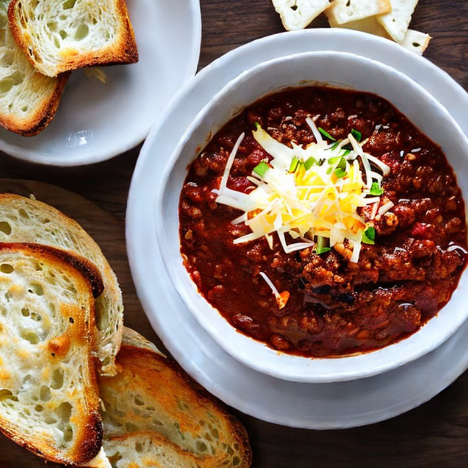

Northern Chili

This chili recipe is from my dad. Growing up, I went with my family to more chili cookoffs than I can count because of him, and I guess I still love chili because I make it every year without fail. It's hearty, easy to reheat in the microwave, and gets better over time. In my humble opinion, there's nothing better than sitting down to a hearty bowl of chili with all your favorite toppings and watching the Sunday game with family while snow is coming down outside.
Ingredients
- 1 lb ground beef, browned
- 1 29 ounce can of kidney beans
- 2 14.5 ounce cans of fire roasted diced tomatoes, drained
- 1 small sweet yellow onion, diced
- 4 cloves of garlic, diced
- 1 jalapeno pepper, diced, seeds removed (optional)
- heaping tablespoon of chili powder
- heaping tablespoon of smoked paprika
- 2 teaspoons cumic
- 2 teaspoons coriander
- 1 teaspoon garlic powder
- 1 teaspoon onion powder
- 1 teaspoon oregano
- 1/2 teaspoon ground black pepper
- 1 tablespoon brown sugar (optional)
- 1 tablespoon balsamic vinegar
Topping Ideas
You can never go wrong with a handful of basic shredded cheese. Or pick a few - they're all great together. Don't ask me how I know.
- Shredded cheddar cheese
- Sour cream
- Chopped chives
- Green onions
- Charred corn
- Crispy breaded fried onion pieces
Tools
- Large saute pan
- 4 quart slow cooker
Directions
- Saute the ground beef with everything except kidney beans, tomatoes, and brown sugar, until onions are clear.
- Add kidney beans, tomatoes, and brown sugar. Transfer to slow cooker and let simmer on high for 3-4 hours or low for 6-8 hours.
Side Dish Ideas
Growing up with in an Asian household, I can confidently say I've had a bowl of chili with white rice and thought, for way longer than I'd like to admit, that everybody did this. White rice is a comfort food for me but southwest rice would be even better.
- Brown sugar cornbread
- Tator tots
- Garlic cheesy toast
- Southwest rice